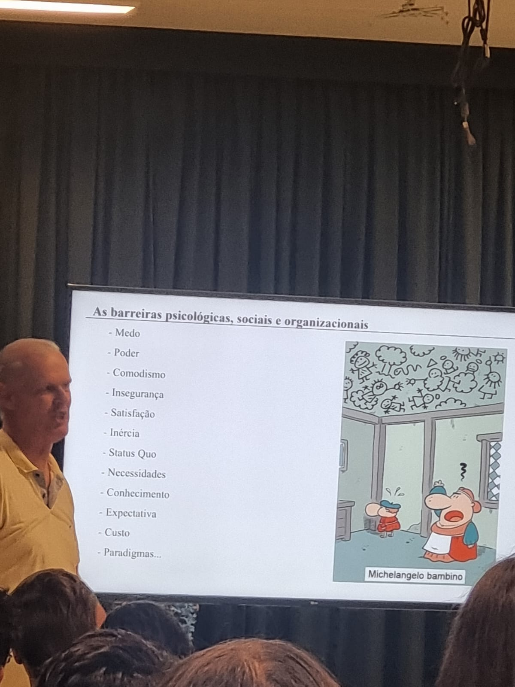

P tech
Encontros do P tech

Contextualização Profissional
25 de março de 2022
Neste encontro, foram apresentadas as empresas parceiras, e discutiu-se o significado da contextualização profissional na área de tecnologia. Compreender o contexto abrangente do trabalho, incluindo aspectos de mercado, necessidades dos usuários e tendências emergentes, foi ressaltado como fundamental. O desenvolvimento de habilidades técnicas direcionadas para a criação de soluções relevantes é essencial para o sucesso na carreira tecnológica.
Ética e Valores
29 de abril de 2022
Durante a reunião sobre ética e valores, foi enfatizado o papel desses princípios em todos os aspectos da vida, inclusive no ambiente profissional. Manter a integridade, o respeito e a responsabilidade se mostrou essencial para alcançar sucesso profissional e estabelecer relações de confiança duradouras.

Visita à Empresa Eduzz
13 de maio de 2022
Este encontro permitiu que os participantes conhecessem o ambiente de trabalho da Eduzz e sua proposta enquanto empresa. A programação incluiu dinâmicas, palestras e debates, proporcionando uma visão abrangente sobre sua cultura organizacional e objetivos.
Comunicação Interpessoal
30 de setembro de 2022
No encontro sobre Comunicação Interpessoal, aprendeu-se a importância de expressar-se claramente e ouvir ativamente como fundamentos para a construção de relacionamentos profissionais sólidos e colaborativos.
Objetivos da ONU
18 de novembro de 2022
A apresentação foi realizada pela Organização das Nações Unidas (ONU), abordando temas e objetivos estratégicos de impacto global.
Trajetória Profissional de Carlos Santos
4 de maio de 2023
Aprendemos sobre a importância da determinação, criatividade e habilidades empreendedoras na construção de uma empresa própria. A palestra destacou valores essenciais para enfrentar desafios e consolidar trajetórias de sucesso.
Inteligência Artificial, Redes Sociais e Ética Regulamentadora
23 de maio de 2023
Explorou-se a interseção entre inteligência artificial, redes sociais e ética, destacando a necessidade de regulamentações que assegurem privacidade, segurança e equidade. Foram discutidas questões como o viés algorítmico e a disseminação de desinformação, mostrando a importância de uma abordagem ética na tecnologia.
Documentário "O Dilema das Redes"
23 de maio de 2023
Assistindo ao documentário "O Dilema das Redes", adquirimos uma compreensão mais profunda dos impactos negativos das mídias sociais, incluindo manipulação de comportamento, polarização e preocupações com privacidade. O documentário ressaltou a importância de refletir criticamente sobre o uso dessas plataformas.
Mapa Mental - Plano de Carreira
4 de maio de 2023
A atividade consistiu em mapear as etapas e objetivos necessários para alcançar uma carreira profissional bem-sucedida. Foi incentivada a especificação de metas e o desenvolvimento de planos para alcançá-las ao longo do percurso.
Palestra com a Consultora de RH
22 de setembro de 2023
A palestra com a consultora de RH abordou aspectos fundamentais na elaboração de currículos. Aprendemos a destacar habilidades, experiências e realizações de forma clara e alinhada a cada vaga, enfatizando o uso de palavras-chave relevantes para aumentar a visibilidade do currículo.
Oficina de Currículo
22 de setembro de 2023
Realizamos a criação dos nossos currículos, aplicando as técnicas discutidas para torná-los mais atraentes e personalizados conforme as exigências do mercado.

Metodologia Scrum
16 de novembro de 2023
Foi abordada a metodologia Scrum, uma abordagem ágil para gerenciamento de projetos, que enfatiza colaboração, flexibilidade e entregas incrementais por meio de ciclos curtos chamados "sprints". Esta metodologia se mostrou eficaz para ambientes de trabalho dinâmicos e equipes multifuncionais.

Criatividade e Inovação
8 de abril de 2024
Nesta palestra, foram exploradas maneiras de aplicar criatividade e inovação ao desenvolvimento de sistemas inteligentes voltados para a solução de problemas urbanos, como o gerenciamento de resíduos. O foco foi no uso de tecnologia para aprimorar processos de coleta de lixo reciclável nas cidades.
As Possibilidades da IA no Mercado de Trabalho
23 de maio de 2024
Discutiu-se como a inteligência artificial (IA) está transformando o mercado de trabalho, automatizando tarefas repetitivas e otimizando processos. A IA possibilita maior eficiência organizacional e decisões em tempo real baseadas em dados. Essa transformação exige novas competências, mas também gera oportunidades em áreas como desenvolvimento de algoritmos e ética aplicada, valorizando o perfil de profissionais criativos e estratégicos.
Liderança e Gestão
27 de maio de 2024
Liderança e Gestão 3.0 é uma abordagem moderna que prioriza a colaboração, motivação e inovação dentro das organizações. Em contraste com modelos tradicionais de gestão, esta abordagem valoriza a autonomia das equipes, promovendo ideias e responsabilidade compartilhada. A gestão 3.0 destaca o desenvolvimento contínuo dos colaboradores, o que resulta em um ambiente organizacional mais produtivo e inovador.
Explorando Homelabs: Transformando Carreiras em TI
18 de junho de 2024
Explorar um homelab é uma estratégia eficaz para impulsionar a carreira em TI, proporcionando um ambiente para testar novas tecnologias, experimentar conceitos e adquirir habilidades práticas de forma autônoma. A criação de um homelab permite simular cenários de segurança, configurar servidores e trabalhar com virtualização, gerando um portfólio robusto que demonstra proatividade e habilidades técnicas para futuros empregadores.
Hacker do Bem e Segurança Digital no Cotidiano
31 de julho de 2024
O hacker ético, ou "hacker do bem," é um profissional de segurança digital especializado em identificar e corrigir vulnerabilidades em sistemas, auxiliando na prevenção de ataques cibernéticos. No cotidiano, a segurança digital se torna essencial, com práticas como o uso de senhas fortes, autenticação em dois fatores e atualizações regulares de software. Profissionais dessa área trabalham proativamente para antecipar riscos e assegurar um ambiente digital mais seguro.
Você é uma Pessoa Organizada?
28 de agosto de 2024
Ser organizado implica em planejar e priorizar atividades, equilibrando responsabilidades de maneira eficiente. Ferramentas como listas de tarefas, calendários e a técnica Pomodoro — que divide o tempo entre blocos de trabalho e descanso — são práticas úteis. Adotar a Matriz de Eisenhower para diferenciar entre tarefas urgentes e importantes também auxilia a manter o foco e produtividade no cotidiano.
Fluxo de Operações Comercial
29 de agosto de 2024
O Fluxo de Operações Comercial em um ERP (Enterprise Resource Planning) é um processo que integra e gerencia todas as fases das vendas e operações comerciais de uma empresa. Ele abrange desde o registro de pedidos e emissão de notas fiscais até o controle de estoque e recebimento de pagamentos, centralizando informações e automações para aumentar a eficiência e facilitar a tomada de decisões.
Tendências na TI com a Ascensão da IA Generativa e Outras Tecnologias
5 de setembro de 2024
A IA Generativa está transformando a área de TI ao introduzir ferramentas como ChatGPT e DALL-E, que possibilitam inovações no desenvolvimento de software, automação de tarefas e criação de conteúdo. O avanço da automação inteligente, computação em nuvem, cibersegurança e machine learning destaca a importância de adquirir novas competências para acompanhar essas tendências, que estão moldando o futuro da TI.
Como Construir uma Carreira Bem-Sucedida
19 de setembro de 2024
Para uma carreira de sucesso, é crucial construir uma marca pessoal autêntica que reflita a qualidade de seu trabalho. Além do desenvolvimento de habilidades técnicas, é importante aprimorar habilidades interpessoais, como comunicação e liderança. Criar uma presença ativa em plataformas como o LinkedIn, compartilhando experiências e mantendo uma rede de contatos sólida, fortalece sua imagem e abre portas para novas oportunidades.
Capricho: Uma Habilidade Cada Vez Mais Valorizada no Mercado
24 de setembro de 2024
Demonstrar capricho no trabalho significa dedicar-se com atenção aos detalhes para assegurar a qualidade em cada tarefa. Na programação, isso inclui escrever código claro e eficiente, buscando sempre aprender e melhorar. Práticas como organização, checklists e revisões frequentes ajudam a manter altos padrões, destacando aqueles que buscam a excelência contínua no mercado.
Desenvolvimento Low Code e No Code
10 de outubro de 2024
Low code e no code são metodologias que simplificam o desenvolvimento de software. No low code, blocos visuais são combinados a uma quantidade mínima de programação, enquanto no no code, as interfaces visuais permitem criar soluções sem codificação. Ambas metodologias oferecem velocidade e acessibilidade em relação à programação tradicional, mas limitam a flexibilidade para soluções mais complexas.
Preparando-se para o Futuro: Da FATEC para o Mundo
17 de outubro de 2024
Nesta palestra, foram discutidas estratégias para que estudantes se preparem para o futuro profissional. Flávia Freitas compartilhou sua jornada, incentivando os participantes a buscarem experiências diversificadas e desenvolverem uma rede de contatos sólida, além de reforçar a importância do trabalho em equipe e da curiosidade como hábitos que formam profissionais bem-sucedidos a longo prazo.